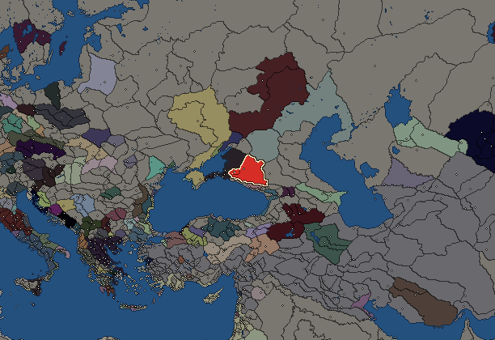
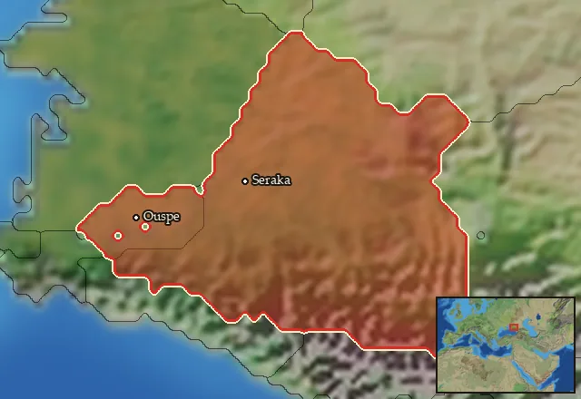

RTR: Imperium Surrectum
RTR: Imperium SurrectumSiraces


- difficulty Medium
- Scythian culture
- believes
 Scythian
Scythian - 2 settlements
- capital Seraka
- 5,700 manpower
- 3 characters
- 12 faction units
- 438 regional units
The campaign brief
"The women of the Sarmatians, so long as they are virgins, ride, shoot, throw the javelin while mounted, and fight with their enemies. They do not lay aside their virginity until they have killed three of their enemies, and they do not marry before they have performed the traditional sacred rites." – Hippokrates of Kos
We are the Siraces, and we rule the wide grasslands of the North. Some of us live in tents and on wagons, others in cities such as Uspe or Seraca, walled towns where the merchants of the Greeks sell their goods to us, and we offer them grain, cattle and fur. Some of them call us "Barbarians", but we've always had close ties with those Greeks on the coast of the Maeotian and Unfriendly Seas, learning their language and fighting for their kings.
Less than two generations ago, their mighty monarch died, and we helped his worthy son Eumelos to ascend to his throne. Near the river Thatis, our king Aripharnes and Eumelos and their warriors fought bravely, yet were overcome by Eumelos' brother Satyros. The victors came to Seraca and besieged it, but our capital is a strong and proud place. It is encircled by the deep river Thates on all sides, by great cliffs and thick woods, and our royal castle stands there. The palace is made of the best stones of the steppe and surrounded by high towers and outworks, impregnable for any attacker. The only other access to our city lies in a gloomy swamp, where our renowned engineers have built wooden paths and houses above the water. Satyros nonetheless attacked the fortifications, with vigour and courage, until he was killed by our spearmen. Eventually, Eumelos took the throne, and laid the foundations for a prosperous period of peace and wealth between our peoples.
In the West, the Thateaeans are our neighbours, those Scythians who supported Satyros. They are vile and primitive and only live on horseback, as is tradition. Our traditions are strong, too, but it is folly to not build cities and palaces for those men who stand above others. Maybe one day, we shall teach the Thateaeans this lesson… in the East, in the shadow of the Caucasus mountains, the Maeotians dwell in their caves and villages, mainly eating the creatures of the sea and the cheese and milk of their cows. Other Siraces live near the mighty mountain range, our cousins, whose land we once left. Now, we settle the blooming banks of the rivers Thates and Achardeüs.
The merciless steppe shapes our people. They are as tough as the grass and as rough as the cold east wind. We are the Siraces, a people of sublime horsemen. Our brave warriors control the lance so deadly and the bow so accurately that no one can stop our raids. We will teach them to fear our name, just as our ancestors from the endless steppe have done ever since the first days of mankind.
Starting settlements
Siraces begins with 2 settlements and 5,700 manpower.
| Settlement | Region | Size | Manpower | Already built | Settlement | Region | Size | Manpower | Already built |
|---|---|---|---|---|---|---|---|---|---|
| Seraka (capital) | Sirakene | large town | 3,600 | 10 buildings | Ouspe | Pandaia | town | 2,100 | 3 buildings |
What is already built in each settlement
Seraka, in Sirakene: Governor's Villa, Wooden Palisade, Homeland, Cisterns (Sanitation), Region Information Scroll, Local Market, Basic Armoury, Shrine, Horse Trainer (Rural), Contour Furrows (Crops)
Ouspe, in Pandaia: Governor's House, Homeland, Region Information Scroll
Starting diplomacy
Siraces begins the campaign with no allies, no trade agreements and no wars.
Like every faction, it is also at war with the  Free Peoples, who hold every settlement no faction does.
Free Peoples, who hold every settlement no faction does.
Homeland
Siraces's homeland is 2 regions. Only there can it install the Homeland government (more on homelands).

Starting characters
| Name | Role | Age | Name | Role | Age | Name | Role | Age | |||
|---|---|---|---|---|---|---|---|---|---|---|---|
| Aripharnes | General | 51 | Abaikos | General | 26 | Charaspes | General | 20 |
Reforms
Open to every faction: Military innovations have arrived!, Second wave of military innovations have arrived!.
Units you can recruit
The same as in the main campaign.